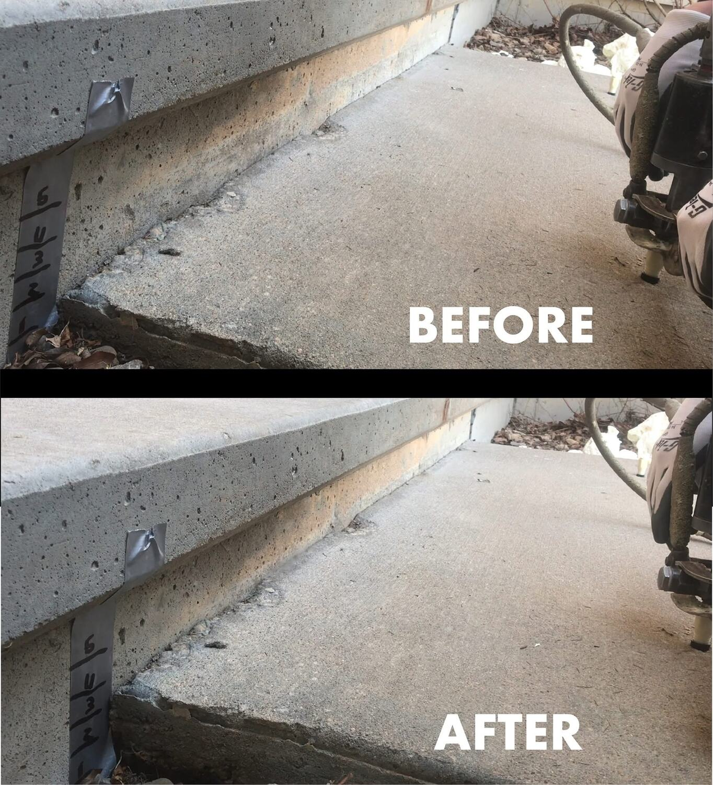

Weak or washed-out soil under a slab, foundation, road or structure? We inject expanding polyurethane deep into the ground to fill hidden voids, support the soil, and control settlement — non-invasive, no excavation, cured fast. Veteran-owned, across Montana, North Dakota, South Dakota & Wyoming.

Cracked slabs, settling foundations, and dipping roads usually aren't the concrete's fault — it's the ground underneath. When soil washes out, compacts, or was never compacted right, it leaves voids and soft spots that can't carry the load, so everything above it moves. We inject structural polyurethane through small ports to fill those voids and firm up the soil in place — supporting the load without digging it all up.
Expanding foam flows into the cavities and channels under slabs and structures that you can't see and can't reach by hand.
Structural polyurethane firms up weak or washed-out soil so it carries the slab, footing, road, or structure again.
Injected through small ports — no tear-out, no big excavation, and it cures in minutes so the area goes back in service fast.
Support settling footings and fill voids under garage, shop, and warehouse slabs.
Firm up soft subgrade under pavement, approaches and parking areas without a full rebuild.
Stabilize soil around structures, bins, and rural infrastructure where settlement is a risk.
They work together. Concrete lifting raises a slab that's already sunk; void filling fills the gaps underneath; soil stabilization firms up the ground so it doesn't happen again. On a lot of jobs we do more than one. We'll assess yours and tell you straight what it actually needs — no upselling what won't help.
★ Read & leave Google reviewsBased in Glendive, MT — serving the four-state region. Not listed? Call, we travel for the right job.
Concrete lifting raises a slab that has already sunk. Soil stabilization treats the cause — the weak or voided soil underneath — by injecting polyurethane to fill voids and support the ground so the settlement is controlled going forward. Many jobs use both.
No — that's the point. The polyurethane is injected through small ports, so there's no tear-out and minimal disruption, and the area goes back in service fast.
It depends on the depth, the void volume, and access — every job is different. Call 406-939-8301 and we'll assess it and give you a straight scope and estimate.
Montana, North Dakota, South Dakota and Wyoming, based out of Glendive, MT. Call for current lead times.